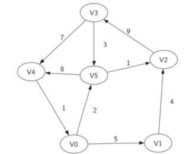
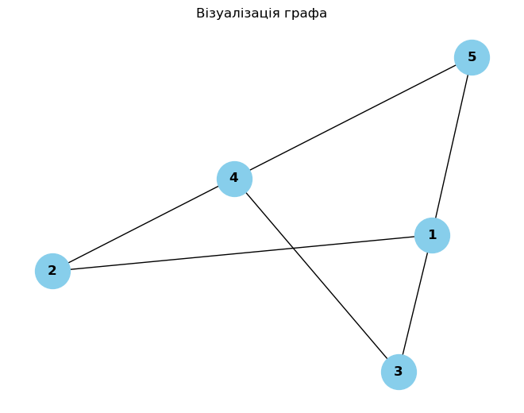
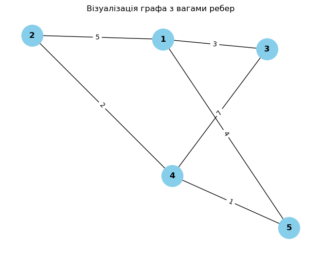
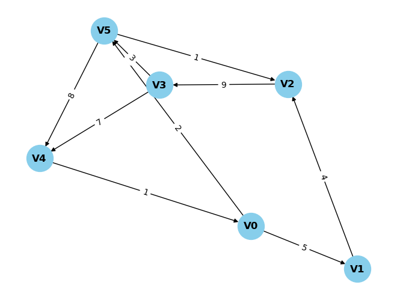
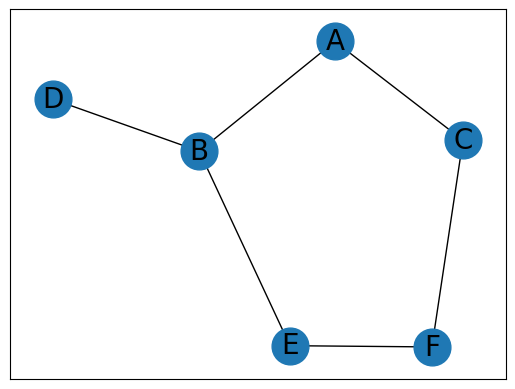
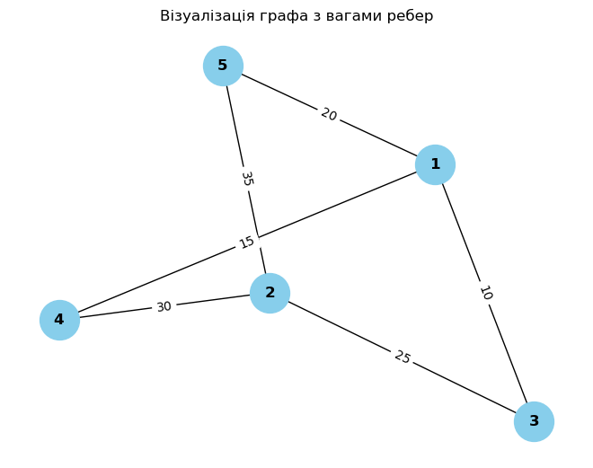
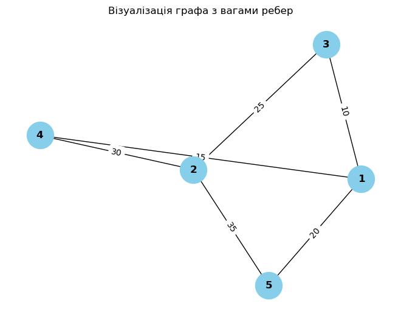
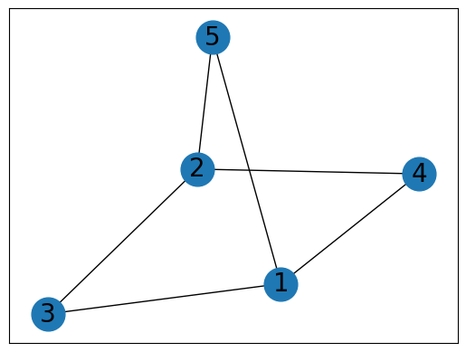

Code
graph = {
'V0': {'V1': 5, 'V5': 2},
'V1': {'V2': 4},
'V2': {'V3': 9},
'V3': {'V4': 7, 'V5': 3},
'V4': {'V0': 1},
'V5': {'V2': 1, 'V4': 8},
}Граф – це абстрактний тип даних, який призначений для реалізації концепцій неорієнтованого та орієнтованого графів, що походять з теорії графів. Граф складається з вузлів і вершин.
Вершина (вузол) - головна частина графа. Може мати ім’я, яке називається «ключ». Також вершина може мати додаткову інформацію, яку ми назвемо «корисним навантаженням».
Ребро (дуга) - інша фундаментальна частина графа. Ребро, що з’єднує дві вершини, показує наявність між ними певних відносин. Ребра можуть бути одно- та двонапрямленим.
Якщо всі ребра графа однонапрямлені, ми називаємо його орієнтованим графом чи диграфом (directed) 727.png).

Ребра можуть мати вагу, що показує вартість переміщення від однієї вершини до іншої. Наприклад, у графі доріг, що зв’язують міста, вага ребра може відображати відстань між двома населеними пунктами.
Формально граф може бути поданий як \(G\), де \(G=(V,E)\). Тут \(V\) множинаіч вершин графа, а \(E\) множинаіч ребер, що їх з’єднуютьКожнене ребро є кортежем \((v,w)\), де \(w, v \in V\). Сюди можна додавати третій компонент, що відображає вагу ребра. Підграф \(s\) – це набір ребер \(e\) і вершин \(v\) таких, що \(e \subset E\) і \(v \subset V\).
Шлях у графі – це послідовність вершин, з’єднаних ребрами. Формально шлях можна визначити, як \(w_1,w_2,...,w_n\) такий, що \((w_i,w_(i+1))∈E\) для всіх \(1 ≤ i ≤n-1\).
Довжиною шляху без ваг є кількість у ньому ребер: \(n-1\). Зважений шлях у графі буде сумою ваг усіх ребер, що входять до нього. Наприклад, на рис. 1 шляхом із \(V_3\) у \(V_1\) є послідовність вершин \((V_3,V_4,V_0,V_1)\). Ребрами – \((v_3,v_4,7),(v_4,v_0,1),(v_0,v_1,5)\).
Цикл у спрямованому графі починається і закінчується в одній і тій самій вершині. Наприклад, на рис. 1 циклом буде шлях \((V_5,V_2,V_3,V_5)\). Граф без циклів називається ациклічним. Орієнтований граф без циклів – це ациклічний спрямований граф або DAG (directed acyclic graph). Нижче буде показано, що з його допомогою можна розв’язати деякі важливі завдання.
Graph() – створює новий порожній граф.
addVertex(vert) – додає в граф об’єкт типу Vertex.
addEdge(fromVert, toVert) – додає в граф нове напрямлене ребро, що з’єднує дві вершини.
addEdge(fromVert, toVert, weight) – додає в граф нове зважене напрямлене ребро, що з’єднує дві вершини.
getVertex(vertKey) – знаходить у графі вершину vertKey.
getVertices() – повертає список усіх вершин графа.
In – повертає True для оператора форми vertex in graph, якщо вершина в графі є, і False в іншому випадку.
Одним з найпростіших способів реалізувати граф є використання двовимірної матриці.
У ній кожен рядок і стовпчик являють собою вершину графа, а збережене в комірці на перетині рядка \(v\) і стовпчика \(w\) значення показує, що існує ребро з вершини \(v\) до вершини \(w\). Коли дві вершини з’єднані, їх уважають суміжними. Матриця суміжності для орієнтованого графа, наведеного на рис. 1, матиме такий вигляд:
\(\begin{pmatrix} 0&5&0&0&0&2 \\ 0&0&4&0&0&0 \\ 0&0&0&9&0&0 \\ 0&0&0&0&7&3 \\ 1&0&0&0&0&0 \\ 0&0&1&0&8&0 \\ \end{pmatrix}\)
Для реалізації розрідженого графа простіше та ефективніше використовувати список суміжності.
У цьому випадку ми зберігаємо список усіх вершин графа та для кожної вершини зберігаємо список сусідніх вершин. У нашій реалізації класу Vertex() буде представлений словником, де ключами будуть вершини, а значеннями – їх ваги. Наприклад, для графа, наведеного на рис. 1, це буде так:
graph = {
'V0': {'V1': 5, 'V5': 2},
'V1': {'V2': 4},
'V2': {'V3': 9},
'V3': {'V4': 7, 'V5': 3},
'V4': {'V0': 1},
'V5': {'V2': 1, 'V4': 8},
}Graph – містить головний список вершин.
Vertex – подання в графі.
class Vertex:
def __init__(self, key):
# Конструктор класу Vertex
self.id = key # Ідентифікатор вершини
self.connectedTo = {} # Сусіди вершини та їх ваги
def addNeighbor(self, nbr, weight=0):
# Додає зв'язок між поточною вершиною та сусідньою вершиною
self.connectedTo[nbr] = weight
def __str__(self):
# Подання вершини у вигляді рядка
return str(self.id) + ' connectedTo: ' + str([x.id for x in self.connectedTo])
def getConnections(self):
# Повертає сусідні вершини поточної вершини
return self.connectedTo.keys()
def getId(self):
# Повертає ідентифікатор поточної вершини
return self.id
def getWeight(self, nbr):
# Повертає вагу ребра між поточною вершиною та заданою сусідньою вершиною
return self.connectedTo[nbr]Клас Graph, містить словник, що відображає імена вершин на їхні об’єкти. Також Graph надає методи для додавання вершин у граф і зв’язування їх одна з одною. Додатково ми маємо реалізацію методу __iter__, що полегшує ітерації по об’єктах Vertex у конкретному графі. Разом два методи дають змогу робити ітерації за іменами вершин або безпосередньо за об’єктами:
class Graph:
def __init__(self):
# Ініціалізація порожнього словника, що відображає імена вершин на об'єкти Vertex.
self.vertList = {}
# Ініціалізація лічильника вершин у графі.
self.numVertices = 0
def addVertex(self, key):
# Збільшення лічильника вершин та створення нового об'єкта Vertex.
self.numVertices = self.numVertices + 1
newVertex = Vertex(key)
# Додавання нової вершини до словника.
self.vertList[key] = newVertex
return newVertex
def getVertex(self, n):
# Повертає об'єкт Vertex за його ім'ям.
if n in self.vertList:
return self.vertList[n]
else:
return None
def __contains__(self, n):
# Перевіряє, чи міститься вершина з заданим ім'ям у графі.
return n in self.vertList
def addEdge(self, f, t, cost=0):
# Додає зв'язок між вершинами з іменами f та t з вагою cost (за замовчуванням – 0).
if f not in self.vertList:
# Якщо вершини f ще немає у графі, додаємо її.
nv = self.addVertex(f)
if t not in self.vertList:
# Якщо вершини t ще немає у графі, додаємо її.
nv = self.addVertex(t)
# Додаємо зв'язок між вершинами f та t з вагою cost.
self.vertList[f].addNeighbor(self.vertList[t], cost)
def getVertices(self):
# Повертає список імен усіх вершин у графі.
return self.vertList.keys()
def __iter__(self):
# Повертає ітератор, який дозволяє ітерувати по об'єктах Vertex у графі.
return iter(self.vertList.values())Продемонструємо роботу з графом на прикладі.
# Створення нового графа
g = Graph()
# Додавання вершин
for i in range(1, 6):
g.addVertex(i)
# Додавання ребер
g.addEdge(1, 2, 5)
g.addEdge(1, 3, 3)
g.addEdge(2, 4, 2)
g.addEdge(3, 4, 7)
g.addEdge(4, 5, 1)
g.addEdge(5, 1, 4)
# Вивід усіх вершин у графі
print("Вершини у графі:", g.getVertices())
# Вивід усіх зв'язків для кожної вершини
for vertex in g:
print("Для вершини", vertex.getId(), "з'єднані вершини:", [v.getId() for v in vertex.getConnections()])Вершини у графі: dict_keys([1, 2, 3, 4, 5])
Для вершини 1 з'єднані вершини: [2, 3]
Для вершини 2 з'єднані вершини: [4]
Для вершини 3 з'єднані вершини: [4]
Для вершини 4 з'єднані вершини: [5]
Для вершини 5 з'єднані вершини: [1]# Визначення вершини
vertex_id = 1
# Отримання вершини за ідентифікатором
vertex = g.getVertex(vertex_id)
# Вивід ваг усіх зв'язків для цієї вершини
print("Ваги зв'язків для вершини", vertex_id)
for nbr_vertex in vertex.getConnections():
print("З", vertex_id, "до", nbr_vertex.getId(), "вага:", vertex.getWeight(nbr_vertex))Ваги зв'язків для вершини 1
З 1 до 2 вага: 5
З 1 до 3 вага: 3import matplotlib.pyplot as plt
import networkx as nx
# Створюємо граф
G = nx.Graph()
# Додаємо ребра
edges = [(1, 2), (1, 3), (2, 4), (3, 4), (4, 5), (5, 1)]
# Додаємо ребра до графа
G.add_edges_from(edges)
# Візуалізуємо граф
nx.draw(G, with_labels=True, node_size=1000, node_color="skyblue", font_size=12, font_weight="bold")
plt.title("Візуалізація графа")
plt.show()
import matplotlib.pyplot as plt
import networkx as nx
# Створюємо граф
G = nx.Graph()
# Додаємо ребра з вагами
edges = [(1, 2, 5), (1, 3, 3), (2, 4, 2), (3, 4, 7), (4, 5, 1), (5, 1, 4)]
# Додаємо ребра з вагами до графа
for edge in edges:
G.add_edge(edge[0], edge[1], weight=edge[2])
# Визначаємо позиції вершин у графі
pos = nx.spring_layout(G)
# Візуалізуємо граф
nx.draw(G, pos, with_labels=True, node_size=1000, node_color="skyblue", font_size=12, font_weight="bold")
# Додаємо ваги ребер
labels = nx.get_edge_attributes(G, 'weight')
nx.draw_networkx_edge_labels(G, pos, edge_labels=labels)
plt.title("Візуалізація графа з вагами ребер")
plt.show()
class Vertex:
def __init__(self, key):
# Ініціалізація об'єкта вершини
self.id = key # Ідентифікатор вершини
self.connectedTo = {} # Список сусідніх вершин та їх ваги
def addNeighbor(self, nbr, weight=0):
# Додавання сусідньої вершини та ваги ребра до поточної вершини
self.connectedTo[nbr] = weight
def __str__(self):
# Подання вершини у вигляді рядка
return str(self.id) + ' connectedTo: ' + str([(x.id, weight) for x, weight in self.connectedTo.items()])
def getConnections(self):
# Повертає список сусідніх вершин
return self.connectedTo.keys()
def getId(self):
# Повертає ідентифікатор поточної вершини
return self.id
def getWeight(self, nbr):
# Повертає вагу ребра між поточною вершиною та заданою сусідньою вершиною
return self.connectedTo[nbr]
class Graph:
def __init__(self, directed=False):
# Ініціалізація графа
self.vertList = {} # Словник вершин
self.numVertices = 0 # Лічильник вершин
self.directed = directed # Прапорець для вказівки напрямку графа
def addVertex(self, key):
# Додавання вершини до графа
self.numVertices += 1
newVertex = Vertex(key) # Створення нової вершини
self.vertList[key] = newVertex # Додавання вершини до словника
return newVertex
def getVertex(self, n):
# Повертає вершину за заданим ключем
return self.vertList.get(n)
def __contains__(self, n):
# Перевіряє, чи міститься вершина у графі
return n in self.vertList
def addEdge(self, f, t, cost=0):
# Додавання ребра між вершинами f та t
if f not in self.vertList:
self.addVertex(f) # Додавання вершини f, якщо вона ще не існує
if t not in self.vertList:
self.addVertex(t) # Додавання вершини t, якщо вона ще не існує
self.vertList[f].addNeighbor(self.vertList[t], cost) # Додавання сусідньої вершини до вершини f
if not self.directed:
# Якщо граф не напрямлений, то додаємо зворотне ребро з вершини t до вершини f
self.vertList[t].addNeighbor(self.vertList[f], cost)
def getVertices(self):
# Повертає список вершин у графі
return self.vertList.keys()
def __iter__(self):
# Перевизначення ітератора для графа
return iter(self.vertList.values())
# Створення графа
graph = {
'V0': {'V1': 5, 'V5': 2},
'V1': {'V2': 4},
'V2': {'V3': 9},
'V3': {'V4': 7, 'V5': 3},
'V4': {'V0': 1},
'V5': {'V2': 1, 'V4': 8},
}
myGraph = Graph(directed=True) # Створення направленого графа
# Додавання ребер до графа на основі поданого словника
for vertex, neighbors in graph.items():
for neighbor, weight in neighbors.items():
myGraph.addEdge(vertex, neighbor, weight)
# Виведення графа
for vertex in myGraph:
print(vertex)V0 connectedTo: [('V1', 5), ('V5', 2)]
V1 connectedTo: [('V2', 4)]
V5 connectedTo: [('V2', 1), ('V4', 8)]
V2 connectedTo: [('V3', 9)]
V3 connectedTo: [('V4', 7), ('V5', 3)]
V4 connectedTo: [('V0', 1)]import networkx as nx
import matplotlib.pyplot as plt
# Граф з вагами ребер
graph = {
'V0': {'V1': 5, 'V5': 2},
'V1': {'V2': 4},
'V2': {'V3': 9},
'V3': {'V4': 7, 'V5': 3},
'V4': {'V0': 1},
'V5': {'V2': 1, 'V4': 8},
}
# Створення направленого графа
G = nx.DiGraph()
# Додавання вершин та ребер до графа
for vertex, neighbors in graph.items():
for neighbor, weight in neighbors.items():
G.add_edge(vertex, neighbor, weight=weight)
# Візуалізація графа
pos = nx.spring_layout(G) # Позиціонування вершин графа
nx.draw(G, pos, with_labels=True, node_size=1000, node_color="skyblue", font_size=12, font_weight="bold") # Візуалізація графа
labels = nx.get_edge_attributes(G, 'weight') # Отримання ваг ребер
nx.draw_networkx_edge_labels(G, pos, edge_labels=labels) # Візуалізація ваг ребер
plt.show() # Відображення графа
Для цього застосуємо спеціалізовану бібліотеку NetworkX.
Бібліотека NetworkX для Python – це потужний інструмент для роботи з графами та мережами. Вона надає різноманітні функції для створення, аналізу та візуалізації графів.
NetworkX підтримує різні типи графів, у тому числі орієнтовані та неорієнтовані, зважені та незважені, мультіграфи та інші. Вона має велику кількість вбудованих алгоритмів для роботи з графами, таких як пошук найкоротших шляхів, центральності вершин, знаходження підграфів та інші. NetworkX також підтримує візуалізацію графів за допомогою різних графічних бібліотек, таких як Matplotlib. Вона є відкритою та широко використовується у наукових дослідженнях, інженерії та інших галузях.
Нижче наведено код обчислення найкоротшого шляху за допомогою алгоритму Дейкстри від вершини 0 до всіх інших вершин. Результати зберігаються у змінних length (довжини шляхів) і path (списки вершин, які складають шляхи).
import networkx as nx
# Створюємо граф G (шляховий граф з 5 вершинами)
G = nx.path_graph(5)
# Візуалізуємо граф
pos = nx.spring_layout(G) # Позиціонування вершин графа
nx.draw(G, pos, with_labels=True, node_size=1000, node_color="skyblue", font_size=12, font_weight="bold") # Візуалізація графа
plt.show() # Відображення графа
# Знаходимо найкоротший шлях від вершини 0 до всіх інших вершин та їх довжини
length, path = nx.single_source_dijkstra(G, 0)
# Виводимо довжину найкоротшого шляху від вершини 0 до вершини 4
print(length[4])
# Виводимо всі довжини найкоротших шляхів від вершини 0 до всіх інших вершин
print(length)
# Знаходимо найкоротший шлях від вершини 1 до всіх інших вершин та їх довжини
nx.single_source_dijkstra(G, source=1)
4
{0: 0, 1: 1, 2: 2, 3: 3, 4: 4}({1: 0, 0: 1, 2: 1, 3: 2, 4: 3},
{1: [1], 0: [1, 0], 2: [1, 2], 3: [1, 2, 3], 4: [1, 2, 3, 4]})Його складність \(O(|V||E|)\) (гірше, ніж у алгоритму Дейкстри), проте він дозволяє працювати з негативними вагами. Нижче наведено код обчислення найкоротшого шляху за допомогою алгоритма Беллмана–Форда.
import networkx as nx
# Створюємо граф G (шляховий граф з 5 вершинами)
G = nx.path_graph(5)
# Знаходимо найкоротший шлях від вершини 0 до всіх інших вершин та їх довжини
length = nx.single_source_bellman_ford_path_length(G, 0)
# Виводимо довжину найкоротшого шляху від вершини 0 до вершини 4
print(length[4])
# Виводимо всі довжини найкоротших шляхів від вершини 0 до всіх інших вершин
print(length)
# Знаходимо найкоротший шлях від вершини 1 до всіх інших вершин та їх довжини
nx.single_source_bellman_ford_path_length(G, source=1) 4
{0: 0, 1: 1, 2: 2, 3: 3, 4: 4}{1: 0, 0: 1, 2: 1, 3: 2, 4: 3}Пошук у глибину (Depth-first search, DFS) – один з методів обходу графа. Стратегія пошуку в глибину, як можна зрозуміти з її назви, полягає у тому, щоб проникнути «вглиб» графа настільки, наскільки це можливо. Під час виконання алгоритму пошуку використовується рекурсивний підхід: перебираються всі ребра, що виходять з поточної вершини. Якщо ребро вказує на вершину, яка ще не була розглянута, то запускається алгоритм пошуку від цієї нової вершини. Після завершення виконання алгоритму повертаємося і продовжуємо перебирати ребра. Повернення відбувається, коли в поточній вершині більше не залишилося ребер, що вказують на невідвідану вершину. Якщо після завершення алгоритму ще залишилися невідвідані вершини, то необхідно запустити алгоритм пошуку від однієї з цих вершин.
Основна мета алгоритму DFS полягає в тому, щоб систематично відвідувати всі вершини та ребра графа. Це може бути використано для вирішення різних задач, таких як: * Пошук шляху або циклу в графі* . Визначення компонентів зв’язності граф* а. Пошук компонентів сильної зв’язності в оргра* фі. Визначення артикуляційних вершин та мостів в гр* афі. Пошук топологічного порядку в DAG (Directed Acyclic Graph) тощо. DFS може бути використаний для різних задач з обробки графів та вирішення багатьох алгоритмічних проблем.
Розглянемо приклад. Спочатку необхідно візуалізувати граф, який складається з шести вершин і шести ребер. Кожна вершина має бути позначена великою літерою (A, B, C, D, E, F), а ребра між вершинами мають бути зображені лініями. До того ж, граф повинен бути побудований з використанням алгоритму весняного розташування для розміщення вершин на площині. Величина вершин повинна бути задана значенням 700, а розміри міток вершин – шрифтом розміром 20 із сімейством шрифту sans-serif.
# Виклик magic-команди, яка автоматично відображає графіки у рядку
%matplotlib inline
# Імпорт необхідних бібліотек
import networkx as nx
import matplotlib.pyplot as plt
# Створення пустого графа
G = nx.Graph()
# Додавання вершин та ребер
G.add_nodes_from(['A', 'B', 'C', 'D', 'E', 'F'])
G.add_edges_from([('A', 'B'), ('A', 'C'), ('B', 'D'),
('B', 'E'), ('C', 'F'), ('E', 'F')])
# Визначення позицій вершин для відображення графа
pos = nx.spring_layout(G)
# Візуалізація вершин та їх міток
nx.draw_networkx_nodes(G, pos, node_size=700)
nx.draw_networkx_labels(G, pos, font_size=20, font_family='sans-serif')
# Візуалізація ребер
nx.draw_networkx_edges(G, pos, edgelist=G.edges())
# Показ графіка
plt.show()
Розглянемо задачу знаходження всіх можливих шляхів від вершини C до вершини F в зазначеному графі.
Для цього використовується алгоритм пошуку в глибину (DFS), який дозволяє обійти всі вершини графа та знайти всі можливі шляхи між двома заданими вершинами.
# Функція dfs використовує алгоритм пошуку в глибину (DFS) для обходу графа.
# Починаючи з вершини start, вона відвідує всі вершини графа, до яких можна дійти з цієї вершини,
# та повертає список відвіданих вершин.
def dfs(graph, start, visited=None):
if visited is None:
visited = set() # Створюємо пустий набір для збереження відвіданих вершин
visited.add(start) # Додаємо поточну вершину до відвіданих
# Перебираємо всі сусідні вершини поточної вершини
for next in set(graph.adj[start].keys()) - visited:
# Рекурсивно викликаємо функцію dfs для наступної вершини
dfs(graph, next, visited)
return visited
# Викликаємо функцію dfs з графом G та початковою вершиною 'C'
dfs(G, 'C')
# Функція dfs_paths також використовує алгоритм пошуку в глибину (DFS),
# але вона знаходить всі можливі шляхи з початкової вершини до цільової вершини.
# Параметр path використовується для зберігання поточного шляху.
def dfs_paths(graph, start, goal, path=None):
if path is None:
path = [start] # Починаємо з початкової вершини
if start == goal:
yield path # Якщо досягли цільової вершини, повертаємо шлях
# Перебираємо всі сусідні вершини поточної вершини, які ще не відвідані
for next in set(graph.adj[start].keys()) - set(path):
# Рекурсивно викликаємо функцію dfs_paths для наступної вершини
yield from dfs_paths(graph, next, goal, path + [next])
# Викликаємо функцію dfs_paths з графом G, початковою вершиною 'C' та цільовою вершиною 'F'
list(dfs_paths(G, 'C', 'F'))
[['C', 'F'], ['C', 'A', 'B', 'E', 'F']][['C', 'F'], ['C', 'A', 'B', 'E', 'F']]Пошук у ширину (breadth-first search, BFS)* – це метод обходу графа та пошуку шляхів у ньому. Він відповідає за послідовний перегляд рівнів графа, розпочинаючи з вихідного вузла \(u\).
На кожному кроці алгоритму розглядаються всі ребра$ (u,v\(), що виходять з вузла\) \(u. Якщо наступний вузол\) $v є цільовим вузлом, то пошук завершується
в іншому випадку вузол$ \(v додається в чергу для подальшого розгляду. Після перевірки всіх ребер, що виходять з вузла\) \(u, з черги вилучається наступний вузол\) $u, і процес повторюється.
def bfs_paths(graph, start, goal):
# Створення черги з початковою вершиною та її шляхом
queue = [(start, [start])]
# Поки черга не порожня
while queue:
# Вибір вершини та її шляху спочатку черги
(vertex, path) = queue.pop(0)
# Для кожної сусідньої вершини
for next in set(graph.adj[vertex].keys()) - set(path):
# Якщо сусідня вершина є цільовою
if next == goal:
# Повернення шляху, якщо досягнуто цільову вершину
yield path + [next]
else:
# Додавання сусідньої вершини та нового шляху в чергу
queue.append((next, path + [next]))
# Виведення усіх шляхів від вершини 'A' до вершини 'F' за допомогою пошуку в ширину
list(bfs_paths(G, 'A', 'F'))[['A', 'C', 'F'], ['A', 'B', 'E', 'F']]Завдання на самостійну роботу:
import matplotlib.pyplot as plt
import networkx as nx
# Створюємо граф
G = nx.Graph()
# Додаємо ребра з вагами
edges = [(1,3,10), (1,4,15), (1,5,20), (2,3,25), (2,4,30), (2,5,35)]
# Додаємо ребра з вагами до графа
for edge in edges:
G.add_edge(edge[0], edge[1], weight=edge[2])
# Визначаємо позиції вершин у графі
pos = nx.spring_layout(G)
# Візуалізуємо граф
nx.draw(G, pos, with_labels=True, node_size=1000, node_color="skyblue", font_size=12, font_weight="bold")
# Додаємо ваги ребер
labels = nx.get_edge_attributes(G, 'weight')
nx.draw_networkx_edge_labels(G, pos, edge_labels=labels)
plt.title("Візуалізація графа з вагами ребер")
plt.show()
Алгоритм Дейкстри
import matplotlib.pyplot as plt
import networkx as nx
# Створюємо граф
G = nx.Graph()
# Додаємо ребра з вагами
edges = [(1,3,10), (1,4,15), (1,5,20), (2,3,25), (2,4,30), (2,5,35)]
# Додаємо ребра з вагами до графа
for edge in edges:
G.add_edge(edge[0], edge[1], weight=edge[2])
# Визначаємо позиції вершин у графі
pos = nx.spring_layout(G)
# Візуалізуємо граф
nx.draw(G, pos, with_labels=True, node_size=1000, node_color="skyblue", font_size=12, font_weight="bold")
# Додаємо ваги ребер
labels = nx.get_edge_attributes(G, 'weight')
nx.draw_networkx_edge_labels(G, pos, edge_labels=labels)
plt.title("Візуалізація графа з вагами ребер")
plt.show()
length, path = nx.single_source_dijkstra(G, 1)
# Виводимо довжину найкоротшого шляху від вершини 1 до вершини 4
print(length[4])
# Виводимо всі довжини найкоротших шляхів від вершини 1 до всіх інших вершин
print(length)
# Знаходимо найкоротший шлях від вершини 2 до всіх інших вершин та їх довжини
nx.single_source_dijkstra(G, source=2)
15
{1: 0, 3: 10, 4: 15, 5: 20, 2: 35}({2: 0, 3: 25, 4: 30, 5: 35, 1: 35},
{2: [2], 3: [2, 3], 4: [2, 4], 5: [2, 5], 1: [2, 3, 1]})Алгоритм Белмана-Форда
import networkx as nx
# Створюємо граф G (шляховий граф з 5 вершинами)
G = nx.Graph()
# Додаємо ребра з вагами
edges = [(1,3,10), (1,4,15), (1,5,20), (2,3,25), (2,4,30), (2,5,35)]
# Додаємо ребра з вагами до графа
for edge in edges:
G.add_edge(edge[0], edge[1], weight=edge[2])
# Знаходимо найкоротший шлях від вершини 1 до всіх інших вершин та їх довжини
length = nx.single_source_bellman_ford_path_length(G, 1)
# Виводимо довжину найкоротшого шляху від вершини 1 до вершини 4
print(length[4])
# Виводимо всі довжини найкоротших шляхів від вершини 0 до всіх інших вершин
print(length)
# Знаходимо найкоротший шлях від вершини 2 до всіх інших вершин та їх довжини
nx.single_source_bellman_ford_path_length(G, source=2) 15
{1: 0, 3: 10, 4: 15, 5: 20, 2: 35}{2: 0, 3: 25, 4: 30, 5: 35, 1: 35}Пошук в глибину DFS
# Виклик magic-команди, яка автоматично відображає графіки у рядку
%matplotlib inline
# Імпорт необхідних бібліотек
import networkx as nx
import matplotlib.pyplot as plt
G = nx.Graph()
# Додаємо ребра з вагами
edges = [(1,3,10), (1,4,15), (1,5,20), (2,3,25), (2,4,30), (2,5,35)]
# Додаємо ребра з вагами до графа
for edge in edges:
G.add_edge(edge[0], edge[1], weight=edge[2])
# Визначення позицій вершин для відображення графа
pos = nx.spring_layout(G)
# Візуалізація вершин та їх міток
nx.draw_networkx_nodes(G, pos, node_size=700)
nx.draw_networkx_labels(G, pos, font_size=20, font_family='sans-serif')
# Візуалізація ребер
nx.draw_networkx_edges(G, pos, edgelist=G.edges())
# Показ графіка
plt.show()
# Функція dfs використовує алгоритм пошуку в глибину (DFS) для обходу графа.
# Починаючи з вершини start, вона відвідує всі вершини графа, до яких можна дійти з цієї вершини,
# та повертає список відвіданих вершин.
def dfs(graph, start, visited=None):
if visited is None:
visited = set() # Створюємо пустий набір для збереження відвіданих вершин
visited.add(start) # Додаємо поточну вершину до відвіданих
# Перебираємо всі сусідні вершини поточної вершини
for next in set(graph.adj[start].keys()) - visited:
# Рекурсивно викликаємо функцію dfs для наступної вершини
dfs(graph, next, visited)
return visited
# Викликаємо функцію dfs з графом G та початковою вершиною '3'
dfs(G, 3)
# Функція dfs_paths також використовує алгоритм пошуку в глибину (DFS),
# але вона знаходить всі можливі шляхи з початкової вершини до цільової вершини.
# Параметр path використовується для зберігання поточного шляху.
def dfs_paths(graph, start, goal, path=None):
if path is None:
path = [start] # Починаємо з початкової вершини
if start == goal:
yield path # Якщо досягли цільової вершини, повертаємо шлях
# Перебираємо всі сусідні вершини поточної вершини, які ще не відвідані
for next in set(graph.adj[start].keys()) - set(path):
# Рекурсивно викликаємо функцію dfs_paths для наступної вершини
yield from dfs_paths(graph, next, goal, path + [next])
# Викликаємо функцію dfs_paths з графом G, початковою вершиною '3' та цільовою вершиною '5'
list(dfs_paths(G, 3, 5))[[3, 1, 4, 2, 5], [3, 1, 5], [3, 2, 4, 1, 5], [3, 2, 5]]Пошук в ширину BFS
def bfs_paths(graph, start, goal):
# Створення черги з початковою вершиною та її шляхом
queue = [(start, [start])]
# Поки черга не порожня
while queue:
# Вибір вершини та її шляху спочатку черги
(vertex, path) = queue.pop(0)
# Для кожної сусідньої вершини
for next in set(graph.adj[vertex].keys()) - set(path):
# Якщо сусідня вершина є цільовою
if next == goal:
# Повернення шляху, якщо досягнуто цільову вершину
yield path + [next]
else:
# Додавання сусідньої вершини та нового шляху в чергу
queue.append((next, path + [next]))
# Виведення усіх шляхів від вершини '1' до вершини '5' за допомогою пошуку в ширину
list(bfs_paths(G, 1, 5))[[1, 5], [1, 3, 2, 5], [1, 4, 2, 5]]html або, якщо наявна робота з налагодженим середовищем Qu arto: quarto preview lab_8_StudentLastName
ipynb Проєкт має складатися мінімум з двох файлів: lab_8_StudentLastName.ipynb та lab_8_StudentLastName .5tml. 5. Дати відповіді на контрольні запитання.
Граф — це сукупність об’єктів із зв’язками між ними. Графи застосовуються в географічни картах (побудова оптимального шляху), мікросхемах, комп’ютерних мережах (побудова модель мережі, визначення оптимальних маршрутів, критичних вузлів), соціальна мережа.
Основні види: орієнтований, неорієнтований, ациклічний. У орієнтованому графі ребра мають напрямок.
Граф можна подати у вигляді матриці суміжності та списку суміжності.
Пошук у ширину – це метод обходу графа та пошуку шляхів у ньому. Він відповідає за послідовний перегляд рівнів графа, розпочинаючи з вихідного вузла \(u\).
На кожному кроці алгоритму розглядаються всі ребра$ (u,v\(), що виходять з вузла\) \(u. Якщо наступний вузол\) $v є цільовим вузлом, то пошук завершується
в іншому випадку вузол$ \(v додається в чергу для подальшого розгляду. Після перевірки всіх ребер, що виходять з вузла\) \(u, з черги вилучається наступний вузол\) $u, і процес повторюється.
Використовується для пошуку шляхів, пошук оптимального шляху.
Стратегія пошуку в глибину полягає у тому, щоб проникнути «вглиб» графа настільки, наскільки це можливо. Під час виконання алгоритму пошуку використовується рекурсивний підхід: перебираються всі ребра, що виходять з поточної вершини. Якщо ребро вказує на вершину, яка ще не була розглянута, то запускається алгоритм пошуку від цієї нової вершини.
В BFS ми розглядаємо усі ребра, а в DFS ми йдемо в максимально вглиб по одній лінії, і тільки потім повертаємось до інших вершин.
Використовується в пошуку шляху або циклу в графі, у визначенні компонентів зв’язності граф, пошуку компонентів сильної зв’язності в орграфі, визначенні артикуляційних вершин та мостів в графі, топологічному сортуванні.
Принцип роботи:
Ініціалізуємо масив Найкоротший[ ] так, що Найкоротший[s] = 0, а Найкоротший[v] = нескінченність для всіх інших вершин v.
Ініціалізуємо чергу з пріоритетами Q, додаючи всі вершини графа разом з відстанню до них у Найкоротший[].
Доки черга Q не порожня: Вилучаємо вершину u з найменшою відстанню з Q. Для кожного сусіднього вузла v з вершини u: – Викликаємо процедуру Релаксація(u, v), яка: – Якщо Найкоротший[u] + вага(u, v) < Найкоротший[v]: – Зменшуємо ключ Q для вершини v на нову відстань (Найкоротший[u] + вага(u, v)).
По завершенні алгоритму масив Найкоротший[] містить найкоротші відстані від вершини 𝑠 до всіх інших вершин графа.
Граф не повинен містити циклів з від’ємною вагою.